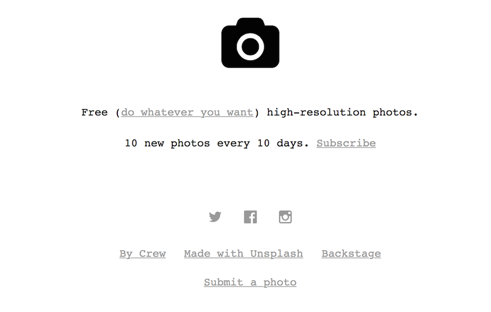
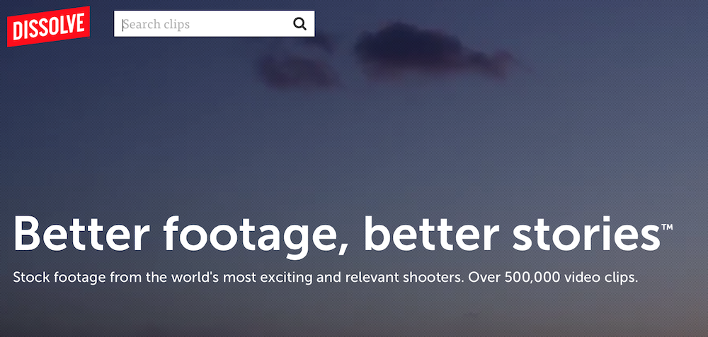
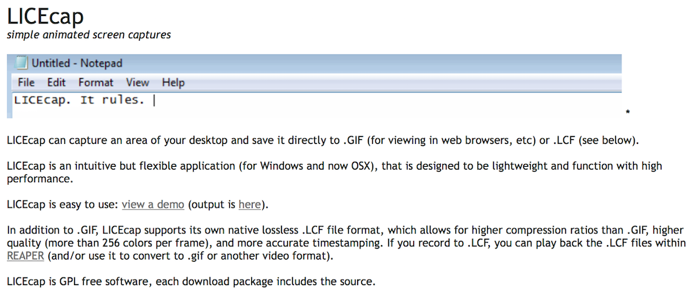
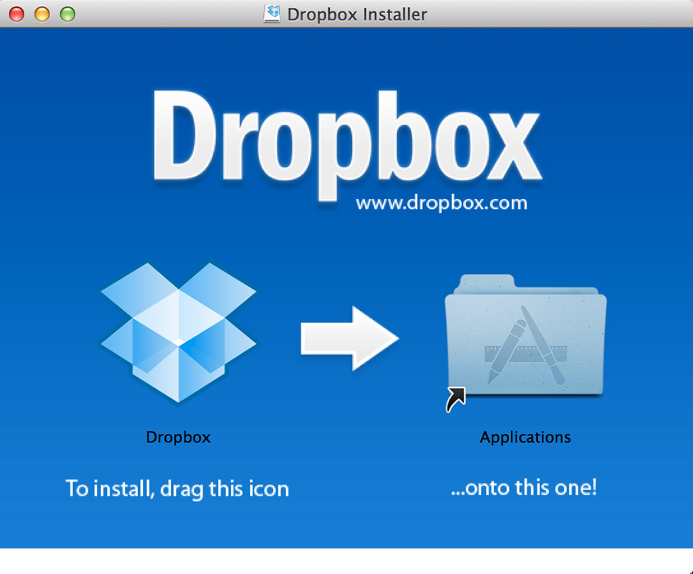

Presentations & You
@TimLockridge // March 7, 2015
Opinions Ahead.
Presentations & Me
Five Key Areas
Planning
Research Story
Arrival
Artifacts
Conference Presentation
Job Talk
Stakeholder Presentation
Audience
Genre Conventions
Your talk is not an essay. It's a talk.
Within reason, Minimize the lit review.
Design
30 Seconds
(Yes, that's a lot of slides)
The sweet spot:
Five words.



(Nope)
- Lose the ordered lists.
- These are your notes.
- They're not for the audience.
- They're for you.
- We don't want to sit through them.
- Stop it.
If you show a block quote, read it.
Time yourself.
Again & again.
Seriously. Don't go over time.
Practice for a
non-expert.
Practice the night before & morning of.

Backup Formats
To conclude:
A question.
Magic
Ask To Meet
Stretch
View this presentation at:
http://www.timlockridge.com/talks/presentations-and-you
View the source files at:
http://www.github.com/timlockridge/presentations-and-you